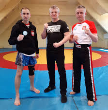
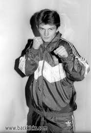
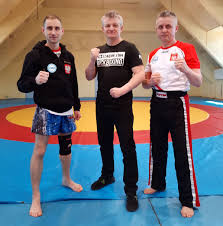
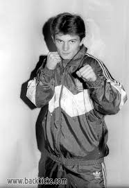
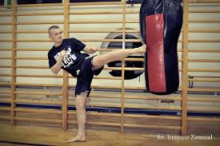
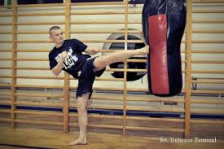
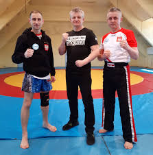
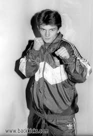
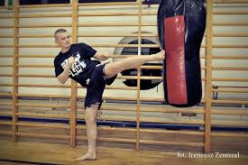

MOJA GALERIA
Chwile uchwycone podczas treningów, zawodów i codziennej pracy
 



 

Sportowiec. Trener. Motywator.
Nazywam się Piotr Siegoczyński i od ponad 30 lat jestem związany ze sportami walki. Jako wielokrotny mistrz świata w kickboxingu, wiem, jaką wartość mają pasja, dyscyplina i nieustanne dążenie do celu.
Zapraszam Cię do świata sportu, w którym pokonywanie własnych ograniczeń staje się codziennością.
Sport to dla mnie sposób na życie, dyscyplina i droga do samodoskonalenia.
Uczy wytrwałości i pokory.
Treningi prowadzę z pasją i zaangażowaniem.
Skupiam się na indywidualnym podejściu i celach podopiecznych.
Moje doświadczenie to nie tylko tytuły, ale także lata pracy z ludźmi.
Daję więcej niż trening – daję motywację.
"Nie urodziłem się mistrzem – stałem się nim dzięki pracy, pasji i determinacji."
Nazywam się Piotr Siegoczyński i od ponad trzech dekad jestem związany ze sportami walki. Moja przygoda z kickboxingiem zaczęła się w czasach, gdy ten sport dopiero raczkował w Polsce. Nie było wtedy kamer, transmisji na żywo, trenerów personalnych ani mediów społecznościowych. Były tylko maty, rękawice, pot na treningach i ogromne marzenia.
Od pierwszego treningu wiedziałem, że to nie będzie tylko przygoda — to będzie moje życie. Z każdym kolejnym krokiem na sali treningowej budowałem nie tylko technikę, ale charakter. Uczyłem się dyscypliny, pokory, szacunku do przeciwnika, i co najważniejsze — walki z samym sobą.
Przez lata miałem zaszczyt reprezentować Polskę na najważniejszych arenach międzynarodowych. Zdobywałem tytuły Mistrza Świata, Mistrza Europy i wielokrotnie Mistrza Polski. Każdy z tych sukcesów to efekt tysięcy godzin spędzonych na treningach — tych, na które miałem siłę, i tych, na które musiałem znaleźć siłę. Ale sport to nie tylko medale. To także momenty zwątpienia, kontuzje, przegrane walki i ciężkie decyzje. Dziś wiem, że to właśnie te momenty były najważniejsze. Bo nie ma rozwoju bez kryzysów. Nie ma zwycięstwa bez porażek. Kickboxing nauczył mnie, że najważniejsze walki to te, które toczymy w sobie — ze zmęczeniem, z wymówkami, z lenistwem, z brakiem wiary w siebie. Po zakończeniu kariery zawodniczej nie odszedłem ze świata sportu. Dziś jako trener, mentor i motywator pomagam innym odnaleźć w sobie siłę, której często nawet nie wiedzą, że posiadają. Pracuję z młodymi zawodnikami, amatorami, osobami, które chcą po prostu poczuć się silniejsze — fizycznie i psychicznie.
• Mistrz Świata WAKO (Full Contact) – 1986
Zdobyłem swój pierwszy tytuł Mistrza Europy w kickboxingu w 1986 roku podczas
zawodów w Atenach, stając się pierwszym Polakiem, który osiągnął ten sukces.
W ciągu mojej kariery sięgnąłem po siedem tytułów Mistrza Europy, reprezentując Polskę
na najważniejszych arenach międzynarodowych.
• Wielokrotny Mistrz Polski
Tytuł mistrza kraju zdobywałem w różnych formułach i kategoriach wagowych,
regularnie dominując krajowe rankingi przez wiele lat. Te sukcesy były dla mnie nie tylko
potwierdzeniem formy sportowej, ale również motywacją do dalszej pracy i rywalizacji na
arenie międzynarodowej.
• Członek kadry narodowej kickboxingu przez ponad dekadę
• Trener reprezentacji Polski
• Odznaczony przez Ministerstwo Sportu za zasługi dla polskiego sportu
Chwile uchwycone podczas treningów, zawodów i codziennej pracy



Ze mną nie tylko poznasz techniki kickboxingu, ale nauczysz się dyscypliny, koncentracji i pracy nad sobą.
Niezależnie od wieku, poziomu czy celu — pomogę Ci osiągnąć maksimum Twoich możliwości.
Zobacz, co o mnie piszą i mówią:
Masz pytania? Chcesz zaprosić mnie na wydarzenie, przeprowadzić trening lub podjąć współpracę?
Telefon: +48123456789
Email: kontakt@piotrsiegoczynski.pl
📍 Warszawa